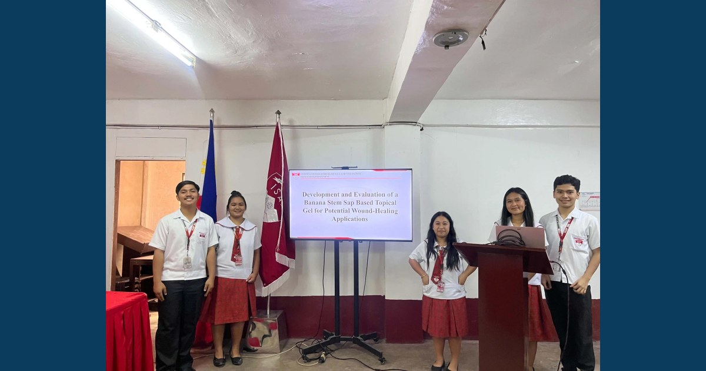

ISAP Grade 12 STEM Learners Advance Scientific Inquiry Through Capstone Title Defense

ISAP conducted the Grade 12 STEM Capstone Title Defense on November 17–18, 2026, at AVR 2, helping learners refine their research ideas through scientific inquiry, academic evaluation, and constructive feedback.
Read full article